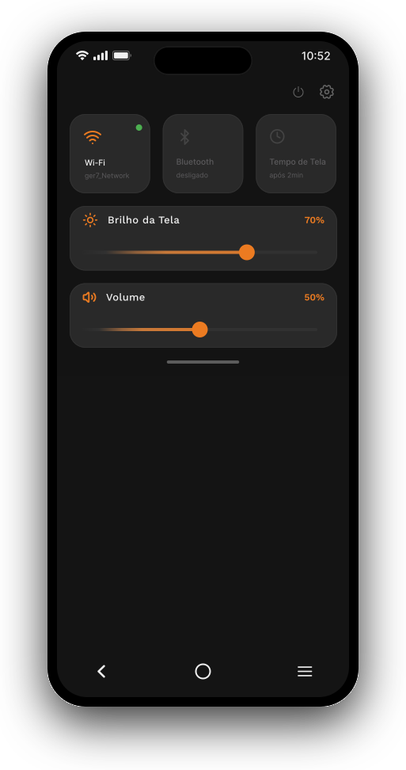
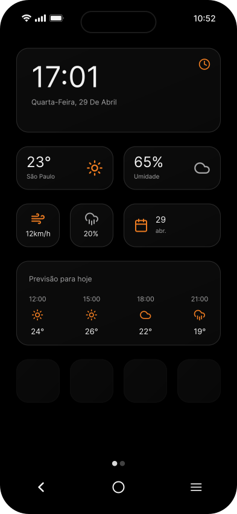
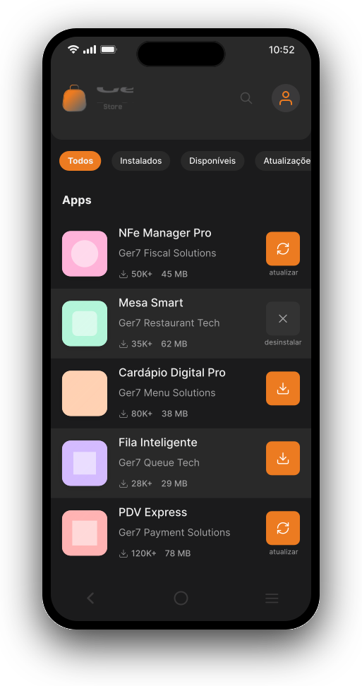
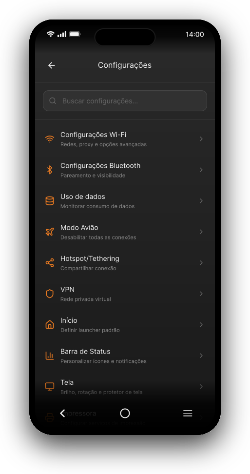
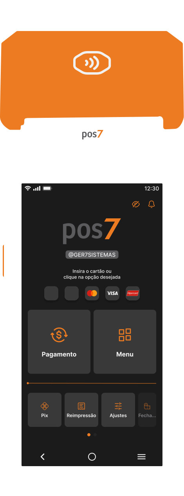

Design que precisa funcionar em produção, não só na apresentação.
31 anos, São Paulo. Há mais de 6 anos desenhando sistemas de pagamento e logística de terminais — do wireframe ao componente em produção, sempre perto de quem decide o roadmap.
O que eu levo para uma squad quando entro
Áreas onde minha atuação muda o resultado do produto, não só a tela.
Do problema ao componente em produção
Conduzo pesquisa, mapeamento e jornada até protótipos navegáveis de alta fidelidade — e acompanho a implementação para o resultado não se perder na entrega ao time de desenvolvimento.
Consistência que escala entre squads
Estruturei e curei design systems e style guides usados por múltiplos times e produtos ao mesmo tempo — inclusive uma base multimarca reaproveitada por diferentes parceiros comerciais.
Perto de quem decide o roadmap
Trabalho lado a lado com POs e PMs para equilibrar viabilidade técnica, estratégia de produto e experiência — traduzindo posicionamento de marca em decisões de interface.
Projetos que sustentam essa fala
Dois sistemas reais, do mundo de pagamentos e terminais, onde liderei o design de ponta a ponta.
O mesmo software de pagamento por aproximação (Tap2Pay) precisava ser lançado sob a identidade de diferentes instituições parceiras — cada uma com marca, cores e posicionamento próprios — sem recriar a interface do zero a cada novo parceiro.
Desenhei a base de componentes e telas do produto (SmartPOS, launcher, loja de aplicativos do terminal) de forma desacoplada da identidade visual, permitindo reskin controlado por marca sem tocar na lógica de interação.
- Arquitetura de componentes reutilizável entre marcas
- Curadoria de estilo por parceiro dentro de um mesmo sistema
- Protótipos de alta fidelidade validados antes do desenvolvimento
Hoje o mesmo motor de design sustenta múltiplas marcas de pagamento (entre elas parceiros como Agilli e Lendpay) sobre a mesma linha de terminais — reduzindo o esforço de lançar cada nova marca a partir do zero.

Launcher
Widgets
Ger7 Store
Config. avançadas
SmartPOSA rede de cooperativas do Sicoob precisava de uma forma centralizada de planejar, distribuir e aprovar terminais de pagamento — um processo até então fragmentado entre planilhas, alçadas manuais e times diferentes.
Liderei o desenho de ponta a ponta do módulo de Gestão de Logística, cobrindo o ciclo completo do terminal dentro da operação de adquirência:
- Planejamento de consumo e controle de estoque
- Ciclo de vida do terminal e configuração de parâmetros
- Fluxo de alçada de aprovação entre times
- Apuração e resultados do processo
Um fluxo único, testado com os usuários operacionais, que substitui etapas manuais por decisões guiadas dentro do produto — com rastreabilidade do pedido até a aprovação final.
Terminais móveis de captura
Identidade visual e telas de terminal portátil, aplicadas a uma nova linha de hardware.
Biblioteca de componentes
Base compartilhada de componentes usada pelas outras frentes do ecossistema Ger7/POS7.
Módulos complementares
Jornadas de apoio à operação de adquirência, desenhadas junto ao módulo principal de logística.
Como eu penso design, times e produto
Comecei em branding, na Neurona Marcas Inteligentes, entendendo como uma marca se traduz em experiência antes mesmo de virar interface. Isso ainda molda como eu penso produto hoje: toda decisão de UI carrega um posicionamento por trás, mesmo quando ninguém está olhando para isso diretamente.
Passei pela 4BIO Medicamentos Especiais, dentro do Grupo Raia Drogasil, ajudando a expandir novos negócios digitais junto com times de tecnologia. Hoje, no Sicoob, lidero projetos de ponta a ponta na área de Sistemas de Pagamentos e Ecossistemas Digitais — de pesquisa a protótipo validado, sempre em contato direto com PMs e POs.
Estou cursando o MBA USP/Esalq em Gestão de Negócios Digitais e Inteligência Artificial, porque acho que o próximo salto de senioridade em design não vem só de UI mais refinada — vem de entender melhor o negócio e as ferramentas que estão mudando como produtos são construídos.
Design é decisão de negócio, não só de tela
Uma interface bonita que não resolve a alçada de aprovação certa, ou não se encaixa na estratégia da marca, não é um bom design — é um mockup caro.
Sistema antes de tela
Prefiro resolver o componente que se repete cem vezes do que a tela única e bonita. É onde a consistência — e a velocidade do time — realmente se ganha.
Perto de quem decide
Prototipar rápido só importa se a decisão certa acontecer com a pessoa certa na sala. Cultivo esse acesso deliberadamente, não como sorte de projeto.
Curadoria é liderança
Manter um design system vivo é um trabalho de liderança silenciosa: dizer não a exceções, para que a exceção certa, quando chegar, ainda faça sentido.
Experiência profissional
Sicoob Confederação — Senior Product Designer
Adquirência, Sistemas de Pagamentos e Logística de Terminais
4BIO Medicamentos Especiais (Grupo Raia Drogasil) — Product Designer Pleno
Branding e expansão de novos negócios digitais
Neurona Marcas Inteligentes — Designer Jr.
São Paulo e região
Formação
MBA USP/Esalq — Gestão de Negócios Digitais e IA
Em andamento
Ohio University — Strategic Marketing Management
Certificação internacional
Ohio University — Business English
Certificação internacional
IMT Mauá — Bacharelado em Design
Instituto Mauá de Tecnologia
E-books curtos sobre o ofício
Passo a passo do que aprendi na prática, do básico ao avançado. Leia na tela ou ouça em áudio.